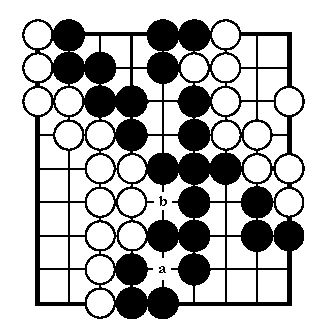

The history of Go stretches back some 3000 years and the rules have remained essentially unchanged throughout this very long period. The game probably originated in China or the Himalayas. In the Far East, where it originated, Go enjoys great popularity today and interest in the game is growing steadily in Europe and America.
A game of Go starts with an empty square board and each player has an unlimited supply of stones, one taking the black stones, the other taking white. The basic object of the game is to use one’s stones to form territories by surrounding vacant areas of the board. It is also possible to capture the opponent’s stones by completely surrounding them. The players take turns, placing one of their stones on a vacant point at each turn, Black playing first. Note that the stones are placed on the intersections of the lines rather than in the squares (there are no diagonal connections). Once played, stones are not moved although they may be captured, in which case they are removed from the board. At the end of the game (when both players pass) the players count one point for each vacant point inside their own territory and one point for every stone they have on the board. The player with the larger total of points wins.
Given a certain Go board position; decide the number of points of each player.
|  | Example Black has surrounded 15 points of territory: 3 at the top of the board, 2 points just below, 9 in the lower right corner plus one point for the territory at intersection a. Adding the actual stones on board (24 stones), Black has a total of 39 points.White’s territory is 17 points: 11 on the left sector plus 6 on the right sector. With 24 stones on board, he has a total of 41 points. So, White wins the game by two points.Notice that intersection b does not belong to either player. |
The input file will contain one line with one integer defining the number of board positions. On the following lines the positions are presented. Each position consists of nine lines of nine characters: X for black stones, O for white stones and a ‘.’ (a dot) for empty intersections. There is no empty line separating each problem set.
Correct output consists of a set of lines (one for each problem solution) where each line consists of: Black <Black points> White <White points> newline.
1
OX..XXO..
OXX.XOO..
OOXX.XO.O
.OOX.XOO.
..OOXXXOO
..OO.X.XO
..OOXX.XX
..OX.X...
..OXX....
Black 39 White 41